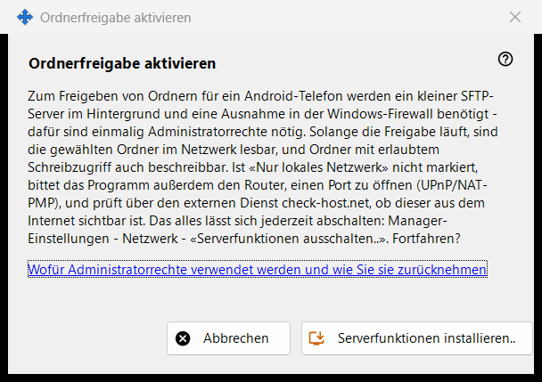
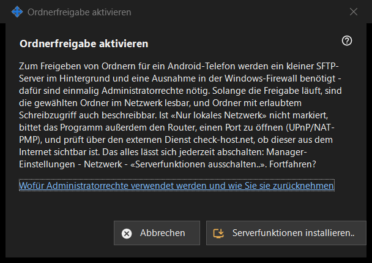

Ordnerfreigabe aktivieren
Verwendungszweck
Bittet um die Erlaubnis, die Serverseite der Freigabe zu installieren: einen kleinen SFTP-Server im Hintergrund und eine Windows-Firewall-Ausnahme. Es öffnet sich über die Schaltfläche «Serverfunktionen aktivieren..» des Hauptfensters und aus den Assistenten und braucht einmalig Administratorrechte.


In dieser Reihenfolge
- Lesen Sie die Erklärung.
- Drücken Sie «Serverfunktionen installieren..».
- Bestätigen Sie die Windows-Administratorabfrage.
- Warten Sie auf die Ergebniszeile; bei Erfolg meldet das Fenster, dass die Ordnerfreigabe aktiviert ist.
- Drücken Sie «Abbrechen», um ohne Änderungen zu verlassen.
Die Elemente
Was es tut
Zum Freigeben von Ordnern für ein Android-Telefon braucht es einen kleinen SFTP-Server im Hintergrund und eine Berechtigung in der Windows-Firewall. Solange die Freigabe läuft, können die gewählten Ordner über das Netzwerk gelesen werden, und die zum Schreiben geöffneten auch beschrieben. Ist die Option nur lokales Netzwerk nicht gesetzt, bittet das Programm außerdem den Router, einen Port zu öffnen (UPnP/NAT-PMP), und prüft die Adresse über einen externen Dienst.
Ergebnisse
«Fertig. Die Ordnerfreigabe ist aktiviert.»; «Freigabe nicht aktiviert - Administratorrechte wurden nicht erteilt.», wenn die Abfrage abgelehnt wird (nichts ändert sich und Sie können es erneut versuchen); oder ein Firewall-Fehler, bei dem das Fenster bittet, es erneut zu versuchen und das Protokoll zu senden: Manager-Einstellungen - Hilfe - «Protokolle zur Analyse exportieren».
Administratorrechte und wie man sie zurücknimmt
Der Link erklärt, wofür die Rechte verwendet werden. Zum Rückgängigmachen nutzen Sie «Serverfunktionen ausschalten..» in den Einstellungen des Managers: Die Freigabe endet, verbundene Telefone werden getrennt und die Firewall-Berechtigung wird entfernt. Die Ordnerliste und das Kennwort bleiben erhalten, und alles lässt sich wieder einschalten.
Managereinstellungen · SFTP-Freigabeeinstellungen · Einstellungen des Austauschservers